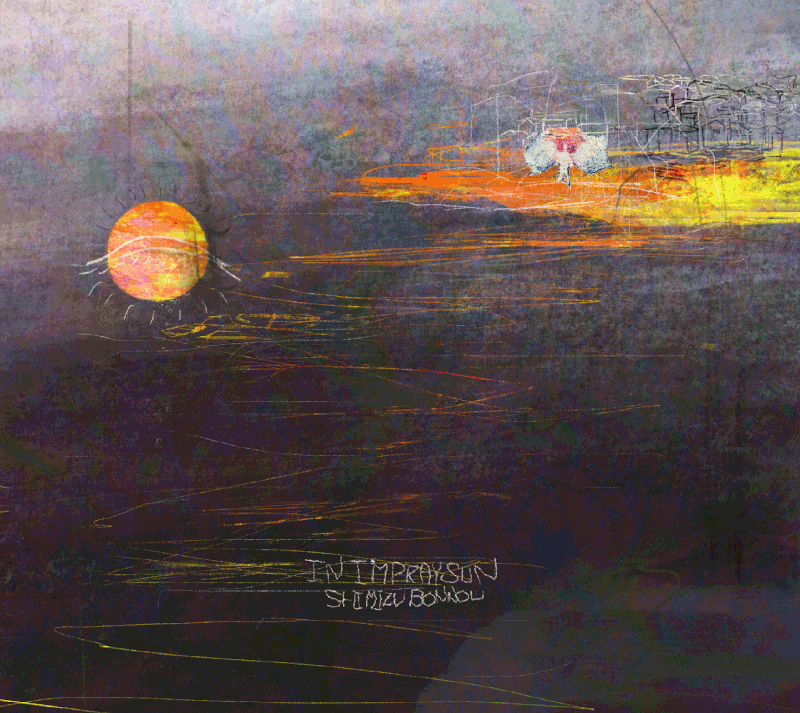

INTRODUCTION
約2年ぶりのリリースとなる本作『IN,I'M PRAY SUN』に通底するのは、温もりのある素朴なメロディーと、幼い頃に布団に潜って読んだファンタジー文学を思わせるノスタルジックな歌詞たち。わらべ歌や民族音楽、スローテクノ～アンビエントまでも連想させる幅広い曲調と、鳥の鳴き声や足音、パチパチと弾ける火の粉など映像的な音色が、アルバム全体を豊かに彩る。 クラウドファンディングで得た資金によって、外出自粛が広がる直前の2020年3月、奈良県・天川村の廃校で11人の仲間と共に録音。本アルバムは音や歌そのものの楽しみを辿りながら、まるで絵本のページをめくるように、聴く人を瑞々しい音楽体験へと導いてくれるだろう。
INFOMATION
清水煩悩「IN, I'M PRAY SUN」
2020.07.29 Release
METRO-001 定価 ¥2,500 (税込み)
7曲入り
METRO-001 定価 ¥2,500 (税込み)
7曲入り
- 01. ﾘﾘｨ
- 02. まほう
- 03. あどべんちや
- 04. Imagin is the port
- 05. 天ノ子
- 06. あめあめふれふとらりるれら
- 07. lullaby
MUSIC VIDEO
清水煩悩 / 3rdアルバム『IN,I'M PRAY SUN』全曲視聴動画
ﾘﾘｨ
むこうぎしサウンド | 清水煩悩：「まほう」「ﾘﾘｨ」
PROFILE
清水煩悩(Shimizu Bonnou)1992.4.11
Wakayama → Tokyo
shimizubonnou@gmail.com
IN, I'M PRAY SUN
©2020 SHIMIZU BONNOU
COMMENT
uami(音楽家)
uamiが清水煩悩さんのIN,I’M PRAY SUNを初めて聴きながら書いた感想です。
M1 ﾘﾘｨ
あー今のみた？って言いたいだけなのに というフレーズの何周目かで涙が出てきたよ。お菓子の袋を開けていた。青々とした田舎のたんぼ。麦わら帽子と犬、セミが鳴いている夏、映像は横殴りで、空が見える
M2 まほう
ながい曲だ。でも忙しいというのを言い訳にしている人に「こういうやつだろ?」って決めつけて欲しくない曲だなあと思った。だいたいのおもてに出たがりなポエムは寒いって思っちゃう。この詩好きだよ。キャンプファイヤーをするに、ちょうどいい暗さになってきた感じ。たまに水中に切り替わる映像。
外で録りましたか。なんでこんなに泣いちゃうの。美しいね。わたし酒飲んでるからかな。すごくいいなあ
８ふん 海に沈んだ
ちょっと待って聞いたことある琴のような音
光ってきた！！！！
すごく乗り物のような速さで進んでる
着地した！全然長くなかった。
M3 あどべんちや
祭りだあ！行進！でも毛糸のアニメイションが見える可愛さ
ぽっぽしてる音かわいい～
ええっ途中のお経みたいな低いこえなあにっ
M4 天ノ子
すごい好き、、、、、、どこの民謡かねえ、、沖縄とか？
なんでここまでめちゃくちゃ夏感あるんだろう、夏にとったのか？
この曲は夏休みの理科室とか出てくるけどね
ギターの近さがぜんたいてきに好きだ、みんなで火を囲んで歌っていますか？
私の部屋も、今そんな照明なのでとても合います
M5 IMAGINE IS THE PORT
いきなり都会の屋上に放り出されたけど、メロディーがわらべうたで心地いい 真面目な妥協、、、
今かと飛び出した斉唱！
M6 あめあめふれとらりるれら
ソファーの家に来た、ホームじゃず、恋、かしこくなりたくないよ～
はああ、いいなあ
M7 lullaby
おまけっぽいサイズのミニ絵本、
オカリナかな。。かあいい
もう終わりかあ。。。
すごく好きです！素晴らしいです、文字にしちゃったからかもだけど一番最初の曲「あー今のみた？って言いたいだけなのに」のフレーズとかいいなあ、でも全体的に夏にぴったりで素敵です！！ここがちょっと、、とか全然なくて、楽しんできけましたです。